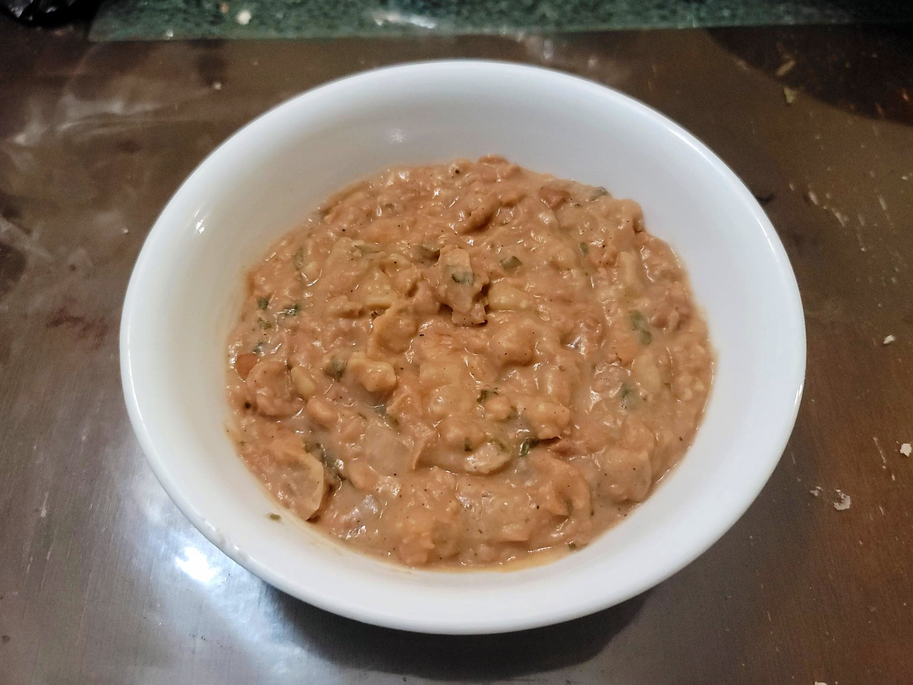

Refried Pinto Beans

Ingredients:
- 2 15oz cans Pinto beans, rinsed and drained
- 1 tbsp Lard or Olive oil
- 1 Onion, diced
- 1/4 tsp Salt + more to taste
- 3 cloves Garlic, minced
- 1/4 tsp Cumin
- 1/2 tsp Chili powder
- 1/2 cup Water
- 1/2 Lime, juiced
- 2 tbsp Cilantro, chopped
Instructions:
- Heat the fat in a saucepan over medium heat. Add in the onions and salt and sauté until translucent, 5-7 minutes.
- Add in the garlic, cumin, and chili powder and sauté for 30 more seconds. Stir in the beans and water. Let cook, covered, for 5 minutes.
- Remove the cover and reduce to low heat. Mash some of the beans to preference until it reaches a desired consistency. Then stir and let simmer for 3 minutes or until thickened to preference.
- Remove from heat and stir in the lime juice and cilantro. Taste and season with salt and pepper as desired. Serve with tortillas, toast or any bread.